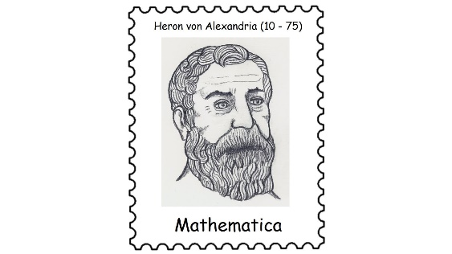

Das Heron-Verfahren
Näherungswerte für Quadratwurzeln berechnen — Schritt für Schritt
1 · Die Idee: Vom Rechteck zum Quadrat
Dein Taschenrechner zeigt dir für \(\sqrt{12}\) sofort 3,4641016151... an — eine irrationale Zahl, die nie abbricht und sich nicht als Bruch schreiben lässt. Aber wie kommt der Rechner auf diesen Wert? Er rät nicht, sondern nähert sich der Wurzel mit einem einfachen, sich wiederholenden Rechentrick an.

Diese Idee ist über 2000 Jahre alt und stammt von Heron von Alexandria (10–75 n. Chr.). Bis heute nutzen Taschenrechner und Computer im Kern dasselbe Prinzip, um Quadratwurzeln zu berechnen.
Die Grundidee: \(\sqrt{A}\) ist genau die Seitenlänge eines Quadrats mit Flächeninhalt A. Deshalb starten wir mit einem Rechteck, das genau diesen Flächeninhalt A hat — und formen es Schritt für Schritt so um, dass es immer „quadratischer" wird.
gestrichelt: Zielquadrat mit Seitenlänge \(\sqrt{A}\)
| Schritt | Seitenlänge x | Seitenlänge y |
|---|